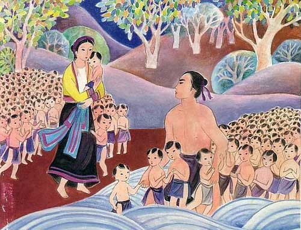
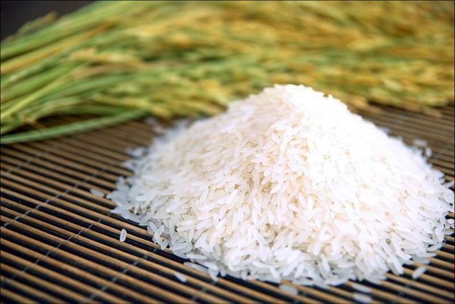
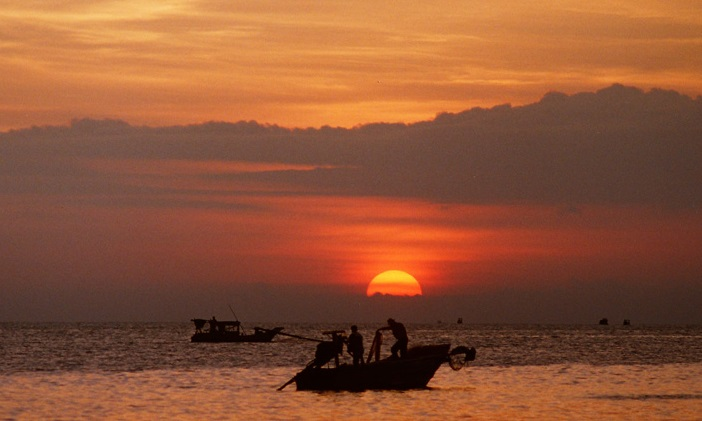
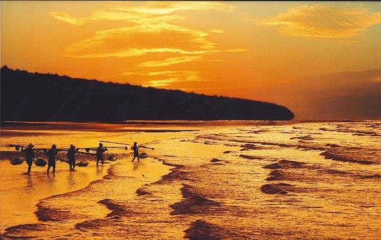
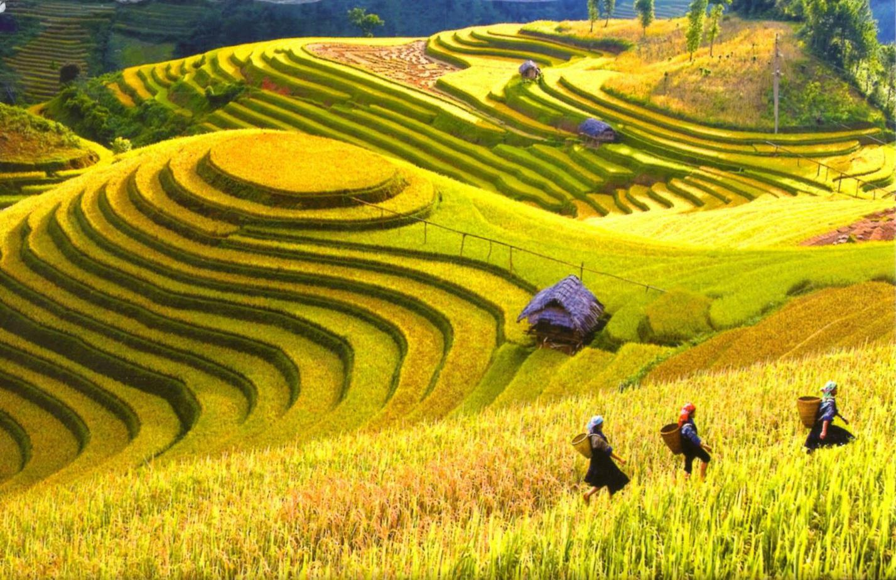
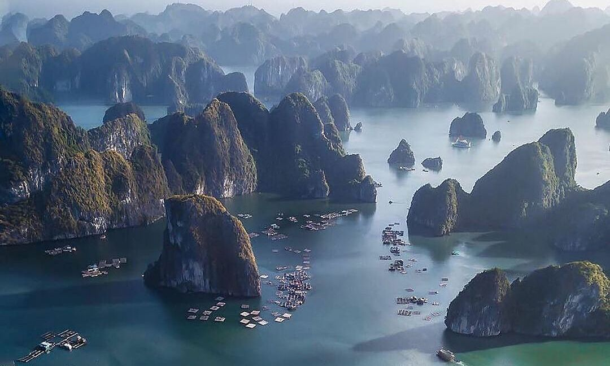
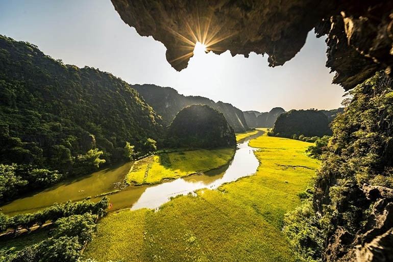

Từ xưa đến nay viết về đất nước luôn là nguồn mạch cảm hứng chủ đạo của nền văn học. Đất nước đối với mỗi người là một ý niệm khác nhau. Nhưng nhìn chung, đó đều là nơi chốn thiêng liêng và cao cả, nơi lưu giữ những giá trị truyền thống dân tộc từ lâu đời. Với Nguyễn Khoa Điềm cũng vậy, Đất Nước đối với ông không phải những gì xa lạ, trừu tượng mà rất bình dị, gần gũi, thân thương đối với mỗi chúng ta. Từ đó, thông qua những áng văn chương, nhà thơ khơi dậy ý thức trách nhiệm của thế hệ trẻ đối với Đất Nước qua tác phẩm “Đất Nước”.







Đất Nước có cội nguồn từ lâu đời
"Khi ta lớn lên Đất Nước đã có rồi
Đất Nước có trong những cái ngày xửa ngày xưa mẹ thường hay kể.
Đất Nước bắt đầu với miếng trầu bây giờ bà ăn
Đất Nước lớn lên khi dân mình biết trồng tre mà đánh giặc
Tóc mẹ thì bới sau đầu
Cha mẹ thương nhau bằng gừng cay muối mặn
Cái kèo cái cột thành tên
Hạt gạo phải một nắng hai sương xay, giã, giần, sàng
Đất Nước có từ ngày đó..."
Đất nước đã xuất hiện, ra đời từ rất lâu rồi. Ngược dòng lịch sử thì đất nước ta đã có từ hơn bốn ngàn năm về trước. Đất Nước đã hiện hữu trong từng câu chuyện cổ tích mẹ kể, từng câu chuyện ấy đã nuôi dưỡng tâm hồn người Việt qua bao thế hệ. Đất Nước còn gắn liền với từng miếng trầu, gợi chúng ta nhớ đến sự tích "Trầu cau", dạy cho chúng ta tình anh em, tình cảm vợ chồng thủy chung. Ngoài ra miếng trầu còn là "đầu câu chuyện", người ta thường mời nhau ăn trầu để thể hiện sự hiếu khách, lịch sự của mình. Đất Nước còn gắn liền với những năm tháng chiến tranh đầy gian khổ từ lâu đời, nhân dân đã biết “trồng tre đánh giặc”, hình ảnh ấy làm chúng ta liên tưởng đến truyền thuyết "Thánh Gióng" – người anh hùng trẻ tuổi dùng gậy tre đánh tan giặc Ân. Cây tre còn là biểu tượng của con người Việt Nam đoàn kết, kiên cường, bất khuất. Không chỉ vậy, đất nước còn gắn liền với các phong tục tập quán của nhân dân ta như tục búi tóc sau đầu của người mẹ Việt Nam, lối sống tình nghĩa thủy chung, thương nhau “gừng cay muối mặn”. Từng “cái kèo, cái cột” cũng trở thành tên gọi người nôm na, dân dã và bình dị. Từ khi Đất Nước ra đời đã gắn liền với nền nông nghiệp lúa nước, vì thế hình ảnh cây lúa, hạt gạo đã trở thành nét đặc trưng gắn liền với Đất Nước. Đất Nước hiện hữu từ trong những gì bé nhỏ, bình dị và thân thuộc nhất của cuộc sống đời thường.
Đất Nước là một phần máu thịt của mỗi con người
"Đất là nơi anh đến trường
Nước là nơi em tắm
Đất Nước là nơi ta hò hẹn
Đất Nước là nơi em đánh rơi chiếc khăn trong nỗi nhớ thầm
Đất là nơi “con chim phượng hoàng bay về hòn núi bạc”
Nước là nơi “con cá ngư ông móng nước biển khơi”
Thời gian đằng đẵng
Không gian mênh mông
Đất Nước là nơi dân mình đoàn tụ
Đất là nơi Chim về
Nước là nơi Rồng ở
Lạc Long Quân và Âu Cơ
Đẻ ra đồng bào ta trong bọc trứng”
Trong khoảng thời gian “đằng đẳng” ấy, Đất Nước đã trải dài “mênh mông” từ Bắc xuống Nam, là nơi nhân dân mọi miền tụ họp, cùng làm ăn sinh sống, đoàn kết, gắn bó, yêu thương đùm bọc lẫn nhau. Đất Nước còn là nơi gắn với những bước chân của "anh" đến trường, nơi "em" tắm, nơi "ta" hò hẹn, nơi "em đánh rơi chiếc khăn trong nỗi nhớ thầm".Nơi đó gắn liền với những sinh hoạt hàng ngày, gắn với những kỉ niệm tình yêu đôi lứa. Đất Nước còn là nơi “chim phượng hoàng bay về núi bạc”, nơi “con cá ngư ông móng nước biển khơi”, là chốn thiêng liêng, nơi “rồng ở, chim về” gắn liền với truyền thuyết “Con rồng cháu tiên”, nhắc nhở chúng ta đều từ một cha một mẹ sinh ra trong bọc trăm trứng, là anh em một nhà. Qua đó nhắc nhở rằng chúng ta phải biết yêu thương và đoàn kết với nhau.
Đất Nước được tạo ra bởi những con người vô danh nhưng họ lại vô cùng anh dũng
"Có biết bao người con gái con trai
Trong bốn nghìn lớp người giống ta lứa tuổi
Họ đã sống và chết
Giản dị và bình tâm
Không ai nhớ mặt đặt tên
Nhưng họ đã làm ra Đất Nước"
Trong những năm tháng chiến tranh, Đất Nước đã trải qua biết bao thăng trầm. Trong suốt chặng đường lịch sử ấy, có vô số người đã đổ máu, hi sinh, hiến dâng cuộc đời mình cho Tổ quốc. Họ không được tất cả mọi người nhớ mặt, nhớ tên nhưng họ đã kiên cường chiến đấu để các thế hệ sau có được một Đất Nước như ngày hôm nay.Họ đã nguyện hiến dâng thân mình để hòa vào dáng hình xứ sở của quê hương, trường tồn mãi với thời gian.
Bên cạnh đó, nhà thơ phát hiện ra một Đất Nước đầy thi vị lại giàu chất trí tuệ thông qua kho tàng văn hóa dân gian:
“Những người vợ nhớ chồng còn góp cho Đất Nước những núi Vọng Phu
Cặp vợ chồng yêu nhau góp nên hòn Trống Mái
Gót ngựa của Thánh Gióng đi qua còn trăm ao đầm để lại
Chín mươi chín con voi góp mình dựng Đất tổ Hùng Vương
Những con rồng nằm im góp dòng sông xanh thẳm
Người học trò nghèo giúp cho Đất Nước mình núi Bút, non Nghiên.
Con cóc, con gà quê hương cùng góp cho Hạ Long thành thắng cảnh
Những người dân nào đã góp tên Ông Đốc, Ông Trang, Bà Đen, Bà Điểm”
Những cái tên, những cảnh trí của thiên nhiên ấy không chỉ tô điểm vào vẻ đẹp của Đất Nước mà còn ẩn chứa những vẻ đẹp tâm hồn của người dân Việt Nam trong suốt bề dày lịch sử. Những núi, sông, ruộng đồng, gò bãi... như là sự hóa thân những phẩm chất cao đẹp của nhân dân. Chính hình tượng đất nước được tạo nên từ những chất liệu đặc biệt ấy mà trở nên thiêng liêng, thân thiết bội phần.
-> Chính những phát hiện cùng với cách thể hiện mới mẻ ấy đã nêu bật được một tư tưởng cốt lỗi: “Đất Nước của Nhân dân, Đất Nước của ca dao, thần thoại”.
"Để Đất Nước này là Đất Nước nhân dân
Đất Nước của nhân dân, Đất Nước của ca dao thần thoại"
Đất Nước là của nhân dân nên nhân dân đã giữ gìn những truyền thống văn hóa của dân tộc
“Họ giữ và truyền cho ta hạt lúa ta trồng
Họ chuyền lửa qua mỗi nhà, từ hòn than qua con cúi
Họ truyền giọng điệu mình cho con tập nói
Họ gánh theo tên xã, tên làng trong mỗi chuyến di dân
Họ đắp đập be bờ cho người sau trồng cây hái trái"
Không ai khác mà chính là nhân dân đã giữ gìn và truyền lại cho thế hệ mai sau những giá trị tinh thần truyền thống vô giá. Những giá trị ấy sẽ tiếp tục được truyền từ thế hệ này sang thế hệ khác để xây dựng một Đất Nước giàu mạnh và phát triển.
Cũng chính vì lẽ đó, Đất Nước đã trở thành máu xương của mình, nên:
"Em ơi em Đất Nước là máu xương của mình
Phải biết gắn bó và san sẻ
Phải biết hóa thân cho dáng hình xứ sở
Làm nên Đất Nước muôn đời"
Chúng ta phải biết quí trọng, giữ gìn Đất Nước. Chúng ta phải biết gắn bó, san sẻ và trên hết là phải biết hóa thân cho “dáng hình xứ sở”. Có như vậy Đất Nước mới phát triển và bền vững muôn đời.
Hình ảnh Đất Nước của Nguyễn Khoa Điềm và Nguyễn Đình Thi
Cùng ra đời sau Cách mạng tháng Tám, nhân dân đã được làm chủ Đất Nước, cả hai bài thơ đều thể hiện được hình tượng một đất nước giàu đẹp, nhân dân anh hùng. Cả hai nhà thơ đều tìm đến giọng thơ trữ tình - chính luận để thể hiện hình tượng đất nước. Hình tượng Đất Nước trong hai bài thơ cũng mang lại cho người đọc những cảm nhận và cảm xúc khác nhau.
Đất nước của Nguyễn Đình Thi được viết từ năm 1948 đến năm 1955 mới hoàn thành. Cảm hứng của nhà thơ đi suốt chiều dài của cuộc kháng chiến chống Pháp. Cảm hứng ấy còn được liên hệ với quá khứ và mở rộng tới tương lai về một đất nước hiền hòa mà bất khuất vươn dậy thần kì trong chiến thắng huy hoàng. Đất nước trong thơ Nguyễn Đình Thi vừa mang màu sắc hiện đại, vừa mang nét dân tộc truyền thống. Tính dân tộc thể hiện trong vẻ đẹp trường cửu của mùa thu xứ sở, của gió heo may, của hương cốm mới. Bức tranh đất nước hiện lên cụ thể, mạch lạc, từ quá khứ, tới hiện tại rồi tới tương lai, kết lại bằng chiến thắng vang dội với hình ảnh mang tính sử thi, hoành tráng, có sức khái quát.
Hình tượng đất nước trong thơ Nguyễn Khoa Điềm lại là một Đất Nước trong màu sắc văn hóa dân gian. Nhà thơ đã dùng một Đất Nước của ca dao, thần thoại để thể hiện hình tượng đất nước, thể hiện tư tưởng “Đất Nước của Nhân dân”. Cách nói vừa quen thuộc vừa mới mẻ. Quen thuộc bởi dân gian đồng nghĩa với nhân dân, nó gắn liền vói nhân dân ở phần cơ bản nhất, đậm đà nhất, dễ thấy nhất. Còn mới mẻ là bởi những thi liệu tác giả sử dụng lấy từ nền văn học dân gian cũng như các nét văn hóa có từ bao đời nay của Đất Nước ta được soi vào hình hài Đất Nước, dùng để định nghĩa Đất Nước, gợi ra một Đất Nước vừa gần gũi vừa đậm chất thơ, vừa bình dị vừa vĩnh cửu.